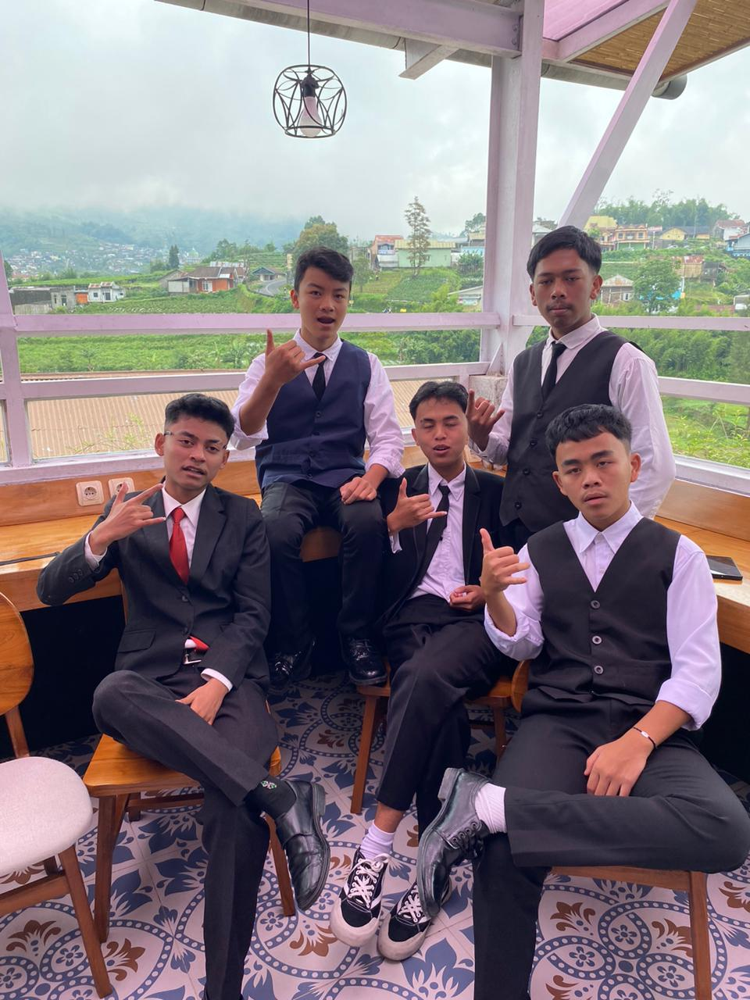
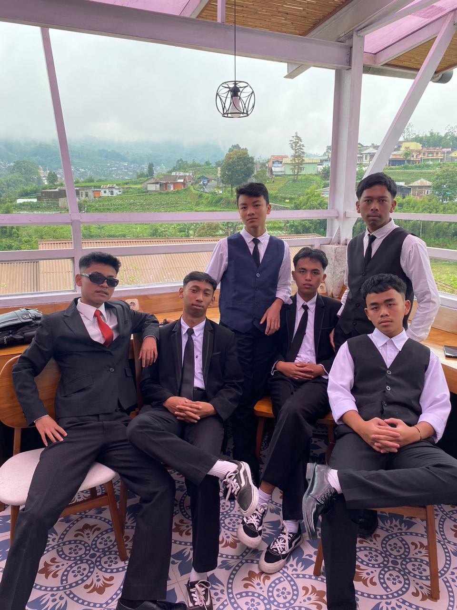

KELAS XII-3
Solidaritas, Kreativitas, dan Kenangan Indah.
Galeri KitaTentang Kelas Kita
Rumah kedua, tempat kami bertumbuh.

SATU CERITA, SATU KELUARGA
Kami adalah angkatan 2025/2026 yang terdiri dari 33 siswa-siswi hebat. Bagi kami, XII-3 bukan hanya sekadar ruang kelas, tapi sebuah keluarga tempat kami berbagi tawa, ide-ide gila, dan saling mendukung.
Dibimbing oleh wali kelas kami yang tercinta, Bu Erliyah, kami bertekad untuk membuat tahun terakhir ini menjadi yang paling berkesan.
Lihat Jadwal PelajaranJadwal Pelajaran
Klik hari untuk melihat jadwal mata pelajaran kelas XII-3.
- 07:00 - 08:30 Matematika Peminatan
- 08:30 - 10:00 Bahasa Indonesia
- 10:00 - 10:30 ISTIRAHAT
- 10:30 - 12:00 Fisika
- 07:00 - 08:30 Kimia
- 08:30 - 10:00 Bahasa Inggris
- 10:00 - 10:30 ISTIRAHAT
- 10:30 - 12:00 Agama
- 07:00 - 08:30 Biologi
- 08:30 - 10:00 Sejarah Indonesia
- 10:00 - 10:30 ISTIRAHAT
- 10:30 - 12:00 PKN
- 07:00 - 08:30 Matematika Wajib
- 08:30 - 10:00 Seni Budaya
- 10:00 - 10:30 ISTIRAHAT
- 07:00 - 09:15 Olahraga (PJOK)
- 09:15 - 11:00 Bimbingan Konseling
- 07:00 - 08:30 Prakarya (PKWU)
- 08:30 - 10:00 Ekstrakurikuler Wajib
Galeri Kita
Momen-momen yang kami abadikan bersama.
